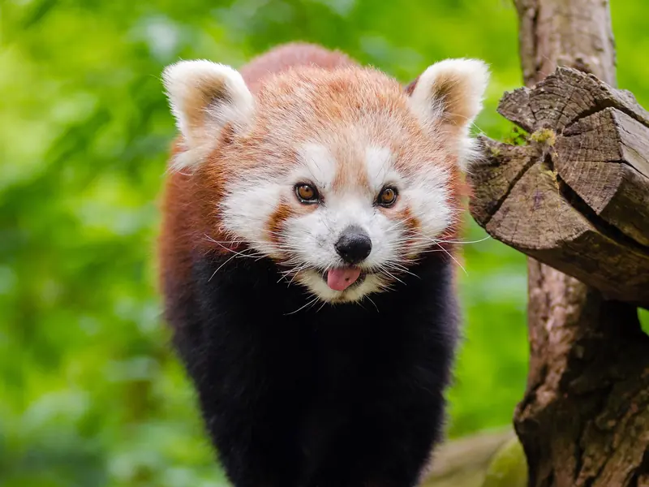

Why are red pandas endangered?
Red pandas are Endangered mainly because the cool mountain forests they depend on are being cut, grazed and broken up by roads, while traps, poaching and dogs add extra losses. The IUCN's 2015 assessment estimated fewer than 10,000 red pandas left in the wild, and research from Nepal, China and genetic labs shows why that number keeps falling.

The short answer
The IUCN Red List classes the red panda as Endangered with a decreasing population. Smithsonian's National Zoo says researchers believe the total population has declined by about 40 percent over the past two decades, and that the decline is likely to continue. The main threats it names are habitat loss and degradation, human interference and poaching. That is a very different story from the giant panda, which was moved from Endangered to Vulnerable in 2016 (see are giant pandas still endangered?).
A specialist with a narrow home
Red pandas live in temperate forests with a thick bamboo understorey, mostly in the Himalaya and the mountains of southwest China. Bamboo leaves make up most of their diet, and they need old trees for shelter and resting. That makes them habitat specialists: when the bamboo or the tall trees go, the red pandas go too.
To see how much habitat is left, Thapa and colleagues gathered occurrence records from across the whole range and built a habitat model, published in Ecology and Evolution in 2018. They predicted about 134,975 square kilometres of potential red panda habitat: 62 percent in China, 15 percent in Nepal, 9 percent in Myanmar, 9 percent in Bhutan and 5 percent in India. Only 28 percent of that habitat lies inside existing protected areas, so most red pandas live on land with no formal protection. Large areas also sit along international borders, which means countries have to cooperate to protect them.
Bamboo cutting and livestock grazing
Much of the pressure comes from everyday use of the forest rather than big commercial projects. In Dhorpatan Hunting Reserve in Nepal, Panthi and colleagues surveyed 54 grid cells for red panda signs and published their results in PLOS ONE in 2017. They estimated that red pandas occupied about 41 percent of the sites. Even small scale bamboo extraction and livestock grazing lowered the chance that red pandas were present, and the amount of bamboo cover mattered more than overall forest cover.
Another PLOS ONE study, by Bista and colleagues in 2017, surveyed ten districts of the Chitwan Annapurna Landscape in central Nepal. Red pandas were found in only five. The model predicted about 1,904 square kilometres of potential habitat there, but only about 17 percent of it was highly suitable, and occupancy was estimated at roughly 7 percent of the habitat. The authors note that red pandas had disappeared from places where they had been reported before.
Smithsonian adds that herds of livestock compete with red pandas for bamboo leaves and trample their habitat, and that clearing land for crops removes both food and shelter.
Roads and broken up forests
When forests are split into patches, red pandas have to change how they live. In eastern Nepal, Bista and colleagues followed ten GPS collared red pandas for a year (Landscape Ecology, 2022). Roads acted as barriers to movement, and the animals spent more time in large habitat patches away from roads and cattle stations. Home ranges grew where forest cover was scarce. The authors warn that these trade offs may harm red pandas over the long term. Our article on red panda home ranges covers this study in more detail.
Traps, poaching, pets and dogs
Red pandas are legally protected in India, Bhutan, China, Nepal and Myanmar, yet direct killing still happens. WWF reports that red pandas are often caught in traps set for wild pigs and deer, and are poached for their pelts in China and Myanmar, with red panda fur hats found for sale in Bhutan. Smithsonian says the trade in pelts and meat has decreased, but the illegal pet trade has reportedly been rising across Asia. Domestic dogs that follow people and livestock into the forest can hunt red pandas or pass on diseases such as canine distemper.
Small, isolated populations
Fragmentation also has a genetic cost. In 2020 Hu and colleagues analysed 65 whole genomes, along with Y chromosome and mitochondrial DNA, in Science Advances. They concluded that red pandas form two species, the Himalayan red panda and the Chinese red panda. The Himalayan red panda has been through three population bottlenecks and only one very small expansion, leaving it with very low genetic diversity and a high genetic load. Smithsonian notes that isolated populations are already showing inbreeding. Small, inbred groups are less able to cope with disease, climate change or a bad year. You can read more about the species question in are red pandas related to giant pandas?
What helps
The IUCN has set four priorities for red panda conservation: protect habitat from loss, reduce habitat degradation, reduce red panda deaths from poaching and other human causes, and raise awareness. The field studies point the same way: stop commercial bamboo extraction, manage grazing, protect forest across borders, and keep patches connected. Zoos in North America, Europe and Asia run breeding programmes as a backup against extinction. Our panda conservation guide lists practical ways to help.
Key takeaways
- The IUCN lists red pandas as Endangered, with fewer than 10,000 estimated in the wild in 2015 and numbers still falling.
- Habitat loss and degradation from logging, grazing, firewood collection and farming are the biggest threats.
- Only 28 percent of predicted red panda habitat lies inside protected areas.
- Roads, traps, poaching, the pet trade, dogs and low genetic diversity add to the pressure.
Frequently asked questions
Are red pandas endangered?
Yes. The IUCN Red List classes the red panda as Endangered. Its 2015 assessment estimated fewer than 10,000 in the wild with a decreasing trend, and Smithsonian researchers estimate the total population has fallen by about 40 percent over the past two decades.
What is the biggest threat to red pandas?
Habitat loss and degradation. Smithsonian's National Zoo lists logging, livestock grazing, firewood collection, farming and human settlement as the main causes. Field surveys in Nepal found red pandas were less likely to be present where bamboo was cut and livestock grazed (Panthi and colleagues 2017).
How much habitat do red pandas have left?
A range wide model estimated about 134,975 square kilometres of potential red panda habitat across China, Nepal, Myanmar, Bhutan and India, with only 28 percent of it inside protected areas (Thapa and colleagues 2018, Ecology and Evolution).
Do people hunt red pandas?
Red pandas are legally protected in all five range countries, but they are still caught in traps set for wild pigs and deer, and WWF reports poaching for pelts in China and Myanmar. Smithsonian notes that the illegal pet trade has reportedly been rising in Asia.
How can I help red pandas?
Support groups that protect forest habitat and work with local communities, never buy wildlife products, and avoid sharing content that treats red pandas as pets. Visiting zoos that take part in coordinated breeding programmes also supports a backup population.
Sources
- IUCN Red List: Red panda, Ailurus fulgens (2015 assessment)
- Smithsonian's National Zoo and Conservation Biology Institute: Red panda
- WWF: Red panda
- Thapa et al. (2018), Predicting the potential distribution of the endangered red panda across its entire range using MaxEnt modeling, Ecology and Evolution 8(21). DOI 10.1002/ece3.4526
- Bista et al. (2017), Distribution and habitat use of red panda in the Chitwan Annapurna Landscape of Nepal, PLOS ONE 12(10). DOI 10.1371/journal.pone.0178797
- Panthi et al. (2017), Large anthropogenic impacts on a charismatic small carnivore: Insights from distribution surveys of red panda Ailurus fulgens in Nepal, PLOS ONE. DOI 10.1371/journal.pone.0180978
- Bista et al. (2022), Effect of disturbances and habitat fragmentation on an arboreal habitat specialist mammal using GPS telemetry: a case of the red panda, Landscape Ecology 37: 795 to 809. DOI 10.1007/s10980-021-01357-w
- Hu et al. (2020), Genomic evidence for two phylogenetic species and long term population bottlenecks in red pandas, Science Advances
Cite this page
APA
PandasWise. (2026, October 21). Why are red pandas endangered? https://pandaswise.com/blog/why-are-red-pandas-endangered.html
MLA
"Why are red pandas endangered?" PandasWise, 21 Oct. 2026, https://pandaswise.com/blog/why-are-red-pandas-endangered.html.
Chicago
PandasWise. "Why are red pandas endangered?" PandasWise. October 21, 2026. https://pandaswise.com/blog/why-are-red-pandas-endangered.html.